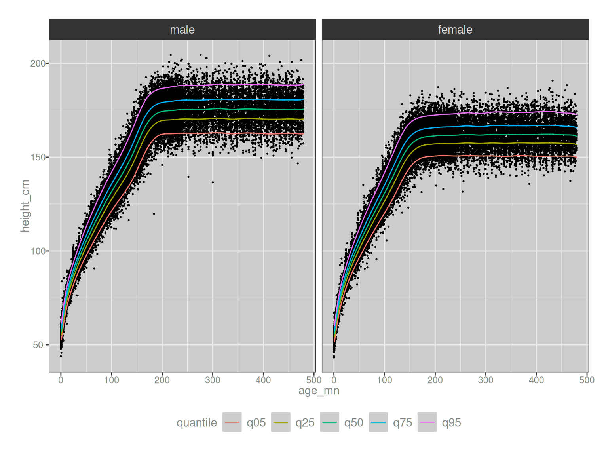
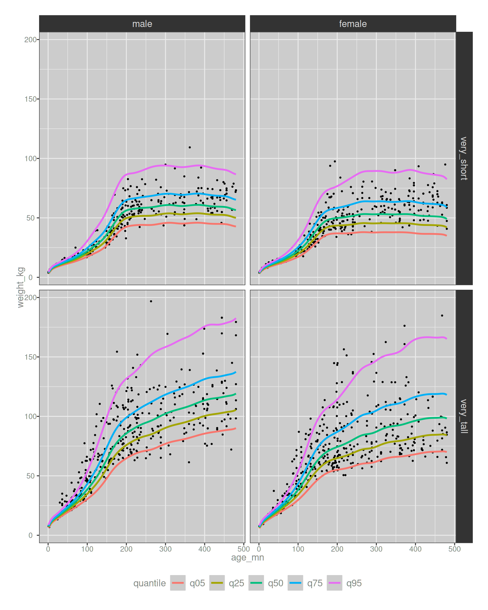
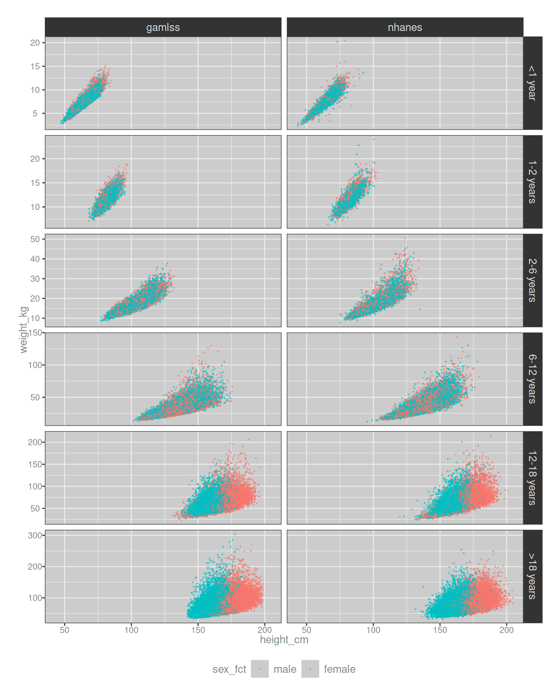
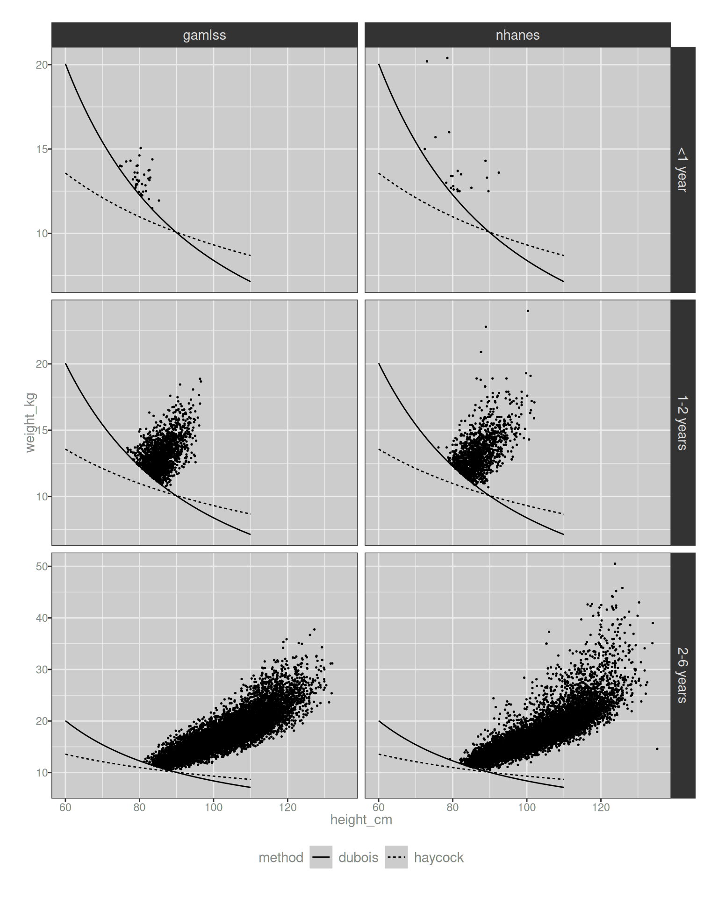
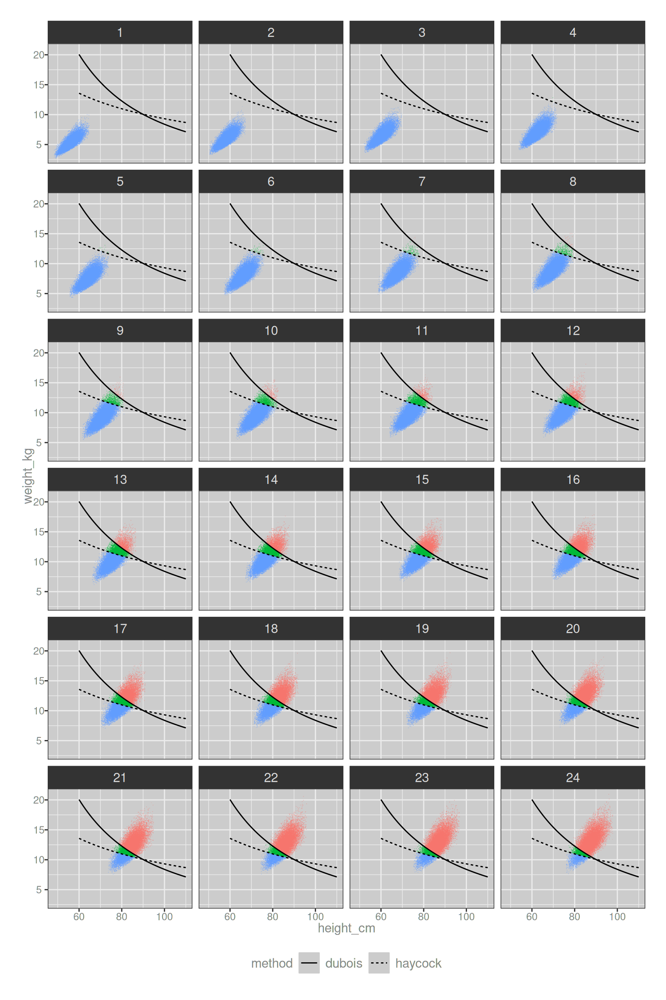
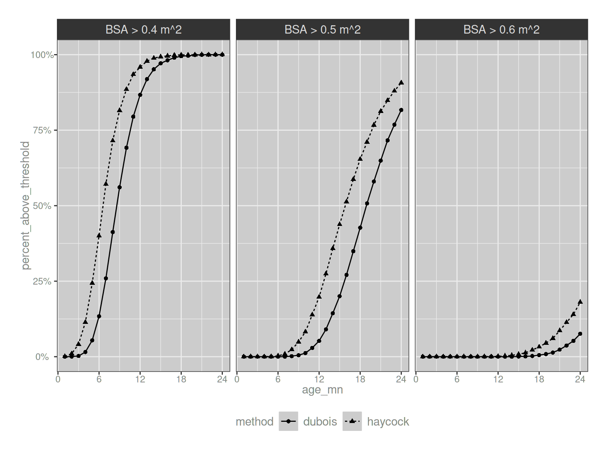

![]()
library(fs)
library(dplyr)
library(purrr)
library(haven)
library(readr)
library(tidyr)
library(gamlss)
library(tibble)
library(ggplot2)
library(quartose)Okay, so two posts ago I was whining about the Box-Cox power exponential distribution, and promising that it would be followed by a new post whining about the generalised additive model for location, shape and scale (GAMLSS). It turns out I was lying because I had to set time aside and write a separate whiny post about penalized splines and promising it would be followed by a post whining about GAMLSS.
This is that post.
Background
My introduction to GAMLSS models came from a problem that is easy to state, and strangely difficult to solve. If you know a person’s age \(a\) and their sex \(s\), describe (and sample from) the joint distribution over height \(h\) and weight \(w\) for people of that age and sex. That is, estimate the following distribution:
\[ p(h, w | a, s) \]
If you don’t think very hard this doesn’t seem like it should be very difficult. Data sets containing age, sex, height and weight are not too difficult to find. The question doesn’t ask for any fancy longitudinal modelling: all we’re being asked to do is estimate a probability distribution. Not difficult at all. It’s a problem I’ve encountered several times in my pharmacometric work – very commonly, we have to run simulations to explore the expected distribution of drug exposures among a population of patients that varies in weight, height, age, and sex – so it’s one I’ve had to think about a few times now, and it’s a trickier than it looks. Typically we have to rely on fairly large population survey data sets (e.g. NHANES) and sophisticated regression models (e.g. GAMLSS), and I will confess that neither of these two things were covered in my undergraduate classes.
It’s been a rather steep learning curve, and in keeping with my usual habit, I decided it might be wise to write up some notes. I know with a dread certainty that I’ll have to use this knowledge again in a few months, and given how awful my memory is these days I’d prefer not to have to relearn the whole thing from the beginning next time.
The NHANES data
The data set I’ll look at in this post comes from the National Health and Nutrition Examination Survey (NHANES), a large ongoing study conducted under the auspices of the United States Center for Disease Control (CDC). The program started in the 1960s, but the data set that is conventionally called “the NHANES data set” refers to the continuous data set that has been collected since 1999, with updates released every couple of years with approximately 5000 participants added each year. The data collection process is quite extensive. As described on the website, it includes:
- Interviews about health, diet, and personal, social, and economic characteristics
- Visits to our mobile exam center for dental exams and health and body measurements
- Laboratory tests by highly trained medical professionals
For any given participant, records are split across several data files. For instance, the body measurements table contains very typical measurements such as height and weight, but also includes variables like waist circumference, thigh circumference, and so on. The demographics table data includes information like age, sex, and so forth. These are the only two tables I’ll use in this post, but there are a great many others also: you can find blood pressure data, audiometry data, various clinical measurements, and so on. It’s a very handy data set used for a variety of purposes, not least of which is the fact that NHANES data are used to build the CDC growth charts that are themselves used for a wide range of scientific and medical purposes. In my own work as a newly-minted pharmacometrician I’ve needed to rely on the NHANES data and/or CDC growth charts in several projects over the last couple of years, and for that reason I’ve found it useful to dive into the data set quite a few times.
As of the most recent release, the summaries below list the file names the body measurement (BMX) and demographics (DEMO) tables:
metadata <- list(
BMX = read_csv(path(post_dir, "nhanes", "bmx-summary.csv"), show_col_types = FALSE),
DEMO = read_csv(path(post_dir, "nhanes", "demo-summary.csv"), show_col_types = FALSE)
)
quarto_tabset(metadata, level = 3)# A tibble: 12 × 3 file_bmx cohort description1 BMX.xpt 1999-2000 body measures 2 BMX_B.xpt 2001-2002 body measures 3 BMX_C.xpt 2003-2004 body measures 4 BMX_D.xpt 2005-2006 body measures 5 BMX_E.xpt 2007-2008 body measures 6 BMX_F.xpt 2009-2010 body measures 7 BMX_G.xpt 2011-2012 body measures 8 BMX_H.xpt 2013-2014 body measures 9 BMX_I.xpt 2015-2016 body measures 10 BMX_J.xpt 2017-2018 body measures 11 BMX_L.xpt 2021-2023 body measures 12 P_BMX.xpt 2017-2020 body measures
# A tibble: 12 × 3 file_demo cohort description1 DEMO.xpt 1999-2000 demographics and sample weights 2 DEMO_B.xpt 2001-2002 demographics and sample weights 3 DEMO_C.xpt 2003-2004 demographics and sample weights 4 DEMO_D.xpt 2005-2006 demographics and sample weights 5 DEMO_E.xpt 2007-2008 demographics and sample weights 6 DEMO_F.xpt 2009-2010 demographics and sample weights 7 DEMO_G.xpt 2011-2012 demographics and sample weights 8 DEMO_H.xpt 2013-2014 demographics and sample weights 9 DEMO_I.xpt 2015-2016 demographics and sample weights 10 DEMO_J.xpt 2017-2018 demographics and sample weights 11 DEMO_L.xpt 2021-2023 demographics and sample weights 12 P_DEMO.xpt 2017-2020 demographics and sample weights
As you can see from the summaries, the data sets are released as SAS transport (i.e., XPT) files, with letters used to represent each data cut. In principle these should go from “A” (data from the 1999-2000 cohort) through to “L” (data from the 2021-2023 cohort), but that’s not precisely what happens. The original release (which ostensibly should be the “A” data cut) doesn’t have a label, and the “K” data cut is missing entirely due to the COVID-19 pandemic. In its place there is a “P” version of data set that breaks the file naming scheme, presumably short for “pandemic”, and labelled differently to highlight that data from that release might be a little strange I suppose.
Importing the data
To explore the NHANES data, we can download all these files and load them into R:
# all demographics and body measurement files
demo_files <- dir_ls(path(post_dir, "nhanes", "data", "demo"))
bmx_files <- dir_ls(path(post_dir, "nhanes", "data", "bmx"))
# read demographics file (selected variables only)
demos <- demo_files |>
map(\(xx) {
dd <- read_xpt(xx)
if (!exists("RIDEXAGM", where = dd)) dd$RIDEXAGM <- NA_real_
dd <- select(dd, SEQN, RIAGENDR, RIDAGEYR, RIDAGEMN, RIDEXAGM)
dd
}) |>
bind_rows(.id = "file_demo") |>
mutate(file_demo = path_file(file_demo)) |>
left_join(metadata$DEMO, by = "file_demo") |>
select(-description)
# read body measurements file (selected variables only)
bmxes <- bmx_files |>
map(\(xx) {
dd <- read_xpt(xx)
dd <- select(dd, SEQN, BMXWT, BMXHT, BMXRECUM)
dd
}) |>
bind_rows(.id = "file_bmx") |>
mutate(file_bmx = path_file(file_bmx)) |>
left_join(metadata$BMX, by = "file_bmx") |>
select(-description)Looking at the code above, you can see that I haven’t included all the columns from the BMX and DEMO tables, only the ones that are most relevant to my purposes. My demos and bmxes data frames are considerably smaller than they would be if I included everything. Importantly for our purposes the SEQN column serves as an id variable, and we can use it to join the tables. In the code below I’m using left_join(bmxes, demos) to do the work because I’m only really interested in those cases where the body measurement data exists, and I’m tidying the column names a little for the sake of my sanity:
nhanes <- bmxes |>
left_join(demos, by = c("SEQN", "cohort")) |>
select(
id = SEQN,
sex_s = RIAGENDR, # sex/gender at screen (1 = M, 2 = F, . = NA)
weight_kg_e = BMXWT, # weight at exam
height_cm_e = BMXHT, # standing height at exam
length_cm_e = BMXRECUM, # recumbent length at exam (0-47 months only)
age_yr_s = RIDAGEYR, # natal age at screening (years)
age_mn_s = RIDAGEMN, # natal age at screening (months; 0-24 mos only)
age_mn_e = RIDEXAGM, # natal age at exam (months; 0-19 years only)
cohort
)
nhanes# A tibble: 119,926 × 9
id sex_s weight_kg_e height_cm_e length_cm_e age_yr_s age_mn_s
<dbl> <dbl> <dbl> <dbl> <dbl> <dbl> <dbl>
1 1 2 12.5 91.6 93.2 2 29
2 2 1 75.4 174 NA 77 926
3 3 2 32.9 137. NA 10 125
4 4 1 13.3 NA 87.1 1 22
5 5 1 92.5 178. NA 49 597
6 6 2 59.2 162 NA 19 230
7 7 2 78 163. NA 59 712
8 8 1 40.7 162 NA 13 159
9 9 2 45.5 157. NA 11 133
10 10 1 112. 190. NA 43 518
# ℹ 119,916 more rows
# ℹ 2 more variables: age_mn_e <dbl>, cohort <chr>Very nice indeed.
Preprocessing choices
Even with the small snippet shown above you can see hints of nuances that arise when working with the NHANES data, especially if pediatric age ranges are of interest (as they very often are for me). Suppose one of the variables of interest in your analysis is height. On row 4 we have data from a 22 month old boy: there is no height measurement for him. That’s very often the case for young infants, most obviously because very young infants can’t stand up so you can’t measure standing height. What you can do for those infants is take a related measurement: recumbent length. Okay that makes sense: you measure height for adults, and length for babies. Except… there are some kids in the age range where it makes sense to take both measurements. Row 1 contains data from a 29 month old girl, who was measured as 91.6cm in height and… 93.2cm in length.
Ah.
Right. The height of a standing human and the length of the same human lying down don’t have to be the same, and the differences between the two won’t be random measurement error, because gravity and posture are real things that exist! The NHANES data itself illustrates that:
ok <- function(x) !is.na(x)
nhanes |>
filter(ok(height_cm_e), ok(length_cm_e)) |>
summarise(
mean_diff = mean(length_cm_e - height_cm_e),
sd_diff = sd(length_cm_e - height_cm_e)
)# A tibble: 1 × 2
mean_diff sd_diff
<dbl> <dbl>
1 1.06 0.998So, when considering what height to use for the boy in row 4, it’s not necessarily a good idea to substitute his length, because those probably aren’t the same. An imputation procedure of some kind is needed. I won’t go into it in this post, but I played around with a few possible models for predicting length from height in the process of writing it, and in the end concluded that nothing fancy is needed here. A simple adjustment will suffice:
length_to_height <- function(length_cm) {
length_cm - 1.06 # adjust based on average difference in NHANES
}It feels a bit silly writing a function for this conversion, but it’s helpful from a documentation purpose: creating a dummy function to use (rather than just subtracting 1.06 later in the code) makes it clear to the reader that I am using some kind of explicit conversion when I transform length to height, and the comment provides a little extra detail on how I chose the conversion rule.
Similar nuances for other measurements exist. There are three different measurements that record age, and they don’t have to be in agreement: the survey takes place at a different point in time to the exam, so it’s possible that the (now relabelled) age_mn_e and age_mn_s variables are different. Age in years at the time of the survey age_yr_s should presumably be consistent with the age in months at the time of the survey, but data aren’t always straightforward. Given all this, the preprocessing steps used to create measurements of age and height look like this:
nhanes <- nhanes |>
mutate(
sex_num = sex_s - 1, # rescale to 0 = M, 1 = F
sex_fct = factor(sex_s, levels = 1:2, labels = c("male", "female")),
age_mn = case_when(
!is.na(age_mn_e) ~ age_mn_e, # use exam months if present
!is.na(age_mn_s) ~ age_mn_s, # else use survey months
TRUE ~ (age_yr_s * 12) # else use age in years
),
age_yr = age_mn / 12,
weight_kg = weight_kg_e,
height_cm = case_when(
!is.na(height_cm_e) ~ height_cm_e, # use height if it was measured
!is.na(length_cm_e) ~ length_to_height(length_cm_e), # or convert length
TRUE ~ NA_real_, # else missing
)
)The NHANES data set doesn’t include information about transgender status or intersex status (at least not in the demographics and body measurements tables), and so for the purposes of NHANES-based analyses sex is a treated as binary variable, and doesn’t require any extra steps beyond tidying and attaching nice labels. A similar story holds for weight: we have one measurement, the weight at time of exam, and that’s what we’ll use.
At this point the unwary might fall into the trap of thinking that we’re done, but – alas – we aren’t quite there yet. There’s one more detail to consider regarding the age data. In the NHANES data set the age values stop at 80, but that value doesn’t literally mean “80 years” it means “80 years or older”. Because of that, you need to take some care in how you work with data for older participants. As it happens, I’ve never had to deal with this in the wild because my projects have used NHANES data in the pediatric setting. Given that, I’ll keep it simple here and just drop all cases with age recorded as “80+” years. Not a problem if your application is pediatric, but you wouldn’t want to do this in situations where you’re interested in older populations.
In any case, having noted this I can finally complete the preprocessing and arrive at my nhanes data frame:
nhanes <- nhanes |>
select(id, sex_num, sex_fct, weight_kg, height_cm, age_mn, age_yr, cohort) |>
filter(ok(sex_num), ok(weight_kg), ok(height_cm), ok(age_mn)) |>
filter(age_yr < 80)
nhanes# A tibble: 113,319 × 8
id sex_num sex_fct weight_kg height_cm age_mn age_yr cohort
<dbl> <dbl> <fct> <dbl> <dbl> <dbl> <dbl> <chr>
1 1 1 female 12.5 91.6 29 2.42 1999-2000
2 2 0 male 75.4 174 926 77.2 1999-2000
3 3 1 female 32.9 137. 125 10.4 1999-2000
4 4 0 male 13.3 86.0 22 1.83 1999-2000
5 5 0 male 92.5 178. 597 49.8 1999-2000
6 6 1 female 59.2 162 230 19.2 1999-2000
7 7 1 female 78 163. 712 59.3 1999-2000
8 8 0 male 40.7 162 159 13.2 1999-2000
9 9 1 female 45.5 157. 133 11.1 1999-2000
10 10 0 male 112. 190. 518 43.2 1999-2000
# ℹ 113,309 more rowsA small slice through a very large data set, but one that contains the four variables that I need almost every time I have to use NHANES data in a pharmacometric analysis: age_mn (\(a\)), sex_fct (\(s\)), height_cm (\(h\)), and weight_kg (\(w\)). I can now turn to the substantive statistical problem: estimating the joint conditional density \(p(h, w | a, s)\).
The GAMLSS framework
Structural model
Let \(\tilde{y}_i = E[y_i|x_{i1}, \ldots, x_{ip}]\) denote the expected value of (the \(i\)-th observation of) the outcome variable \(y\), conditioned on knowing the values of \(p\) predictor variables \(x_{1}, \ldots, x_{p}\). In linear regression we propose that
\[ \tilde{y}_i = \beta_0 + \sum_{k=1}^p \beta_k \ x_{ik} \]
Often we would rewrite this in matrix notation and express it as \(\tilde{\mathbf{y}} = \mathbf{X} \mathbf{\beta}\) to make it look pretty, but I honestly don’t think it adds much in this context. There are two different paths you could pursue when extending this framework: you could change something on the left hand side, or you could change something on the right hand side. For example, the generalised linear model introduced by Nelder and Wedderburn (1972) modifies the linear model by supplying a “link function” \(g()\) that transforms \(\tilde{y}\),
\[ g(\tilde{y}_i) = \beta_0 + \sum_{k=1}^p \beta_k \ x_{ik} \]
Crudely put, the GLM applies a linear model to a transformed outcome variable (i.e., \(y\)). On the other hand, in the additive model proposed by Friedman and Stuetzle (1981), transformation functions \(f()\) – sometimes called “smoothing functions” – are applied to the predictor variables (i.e., \(x\)):
\[ \tilde{y}_i = \beta_0 + \sum_{k=1}^p f_k(x_{ik}) \]
I’ll talk more about the choice of smoothing function \(f()\) later in the post, but for now the key thing to note is that the functions used for this purpose usually have free parameters that need to be estimated from the data. Because of this, fitting an additive model is a little more complicated than a simple “transform the predictors first and then fit a linear regression later” procedure.
In any case, having noted that generalised linear models introduce the link function \(g()\) and additive models introduce the smoothing functions \(f()\), it seems natural to consider a modelling framework that uses both of these things. That framework exists: it is called the generalised additive model (GAM), introduced by Hastie and Tibshirani (1990):
\[ g(\tilde{y}_i) = \beta_0 + \sum_{k=1}^p f_k(x_{ik}) \]
Measurement model
In linear model with homogeneity of variance, we normally write this:
\[ y_i = \tilde{y}_i + \epsilon_i \]
where the measurement error terms \(\epsilon_i\) are assumed to be normally distributed with mean fixed at 0 and standard deviation \(\sigma\) estimated from the data. Another way to express the same idea would be to say that the outcome variable \(y_i\) is normally distributed with mean \(\mu_i = \tilde{y}_i\), and a constant standard deviation \(\sigma_i = \sigma\). Taking this line of reasoning a little further, we could rewrite the model in terms of two regression models: a linear model for the mean \(\mu\), and another linear model for the standard deviation \(\sigma\):
\[ \begin{array}{rcl} \mu_i &=& \beta_{\mu 0} + \sum_k \beta_{\mu k} \ x_{ik} \\ \sigma_i &=& \beta_{\sigma 0} \\ \\ y_i &\sim& \mbox{Normal}(\mu_i, \sigma_i) \end{array} \]
The only way in which this framing of the model differs from the usual form is that I’ve used \(\beta_{\sigma 0}\) to refer to the to-be-estimated \(\sigma\) parameter. The difference is purely notational, but it reflects a slight shift in mindset: it signals that we’re now considering the possibility that we could have chosen to develop a richer regression model that allows each observation to have its \(\sigma_i\), rather than use an “intercept only” model for the variance. Indeed when expressed this way, the “homogeneity of variance” assumption in linear regression now corresponds to the special case in which no covariates (predictors) are included in the model for \(\sigma\). Moreover, it makes clear that there’s no inherent reason to limit ourselves in this way. Relaxing homogeneity of variance allows us to specify regression models for both \(\mu\) and \(\sigma\), giving us the following framework for linear regression:
\[ \begin{array}{rcl} \mu_i &=& \beta_{\mu 0} + \sum_k \beta_{\mu k} \ x_{ik} \\ \sigma_i &=& \beta_{\sigma 0} + \sum_k \beta_{\sigma k} \ x_{ik} \\ \\ y_i &\sim& \mbox{Normal}(\mu_i, \sigma_i) \end{array} \]
Having made this conceptual shift, it’s not too hard to see that we can repeat the line of reasoning from the previous section that took us from linear models to generalised additive models. To wit, if we replace the regression coefficients \(\beta_{\mu k}\) and \(\beta_{\sigma k}\) with smooth functions \(f_{\mu k}()\) and \(f_{\sigma k}()\) and use these to transform the predictors, we have an additive regression model for the mean and the standard deviation…
\[ \begin{array}{rcl} \mu_i &=& \beta_{\mu 0} + \sum_k f_{\mu k}(x_{ik}) \\ \sigma_i &=& \beta_{\sigma 0} + \sum_k f_{\sigma k}(x_{ik}) \\ \\ y_i &\sim& \mbox{Normal}(\mu_i, \sigma_i) \end{array} \]
Adding link functions \(g()\) to connect the additive predictor to the parameters gives a generalised additive regression on the mean and the standard deviation…
\[ \begin{array}{rcl} g_\mu(\mu_i) &=& \beta_{\mu 0} + \sum_k f_{\mu k}(x_{ik}) \\ g_\sigma(\sigma_i) &=& \beta_{\sigma 0} + \sum_k f_{\sigma k}(x_{ik}) \\ \\ y_i &\sim& \mbox{Normal}(\mu_i, \sigma_i) \end{array} \]
Finally, we recognise that the normal distribution is not the only choice of measurement model. Like many other distributions it can be described as a distribution that contains one parameter for the location (i.e., \(\mu\)) and scale (i.e., \(\sigma\)). More generally though, we might want to use distributions described by one parameter for location, one parameter for scale, and one or more parameters for the shape. If we instead choose the Box-Cox power exponential (BCPE) – in which \(\mu\) is a location parameter, \(\sigma\) is a scale parameter, and \(\nu\) and \(\tau\) together control the shape – the statistical model now looks like this…
\[ \begin{array}{rcl} g_\mu(\mu_i) &=& \beta_{\mu 0} + \sum_k f_{\mu k}(x_{ik}) \\ g_\sigma(\sigma_i) &=& \beta_{\sigma 0} + \sum_k f_{\sigma k}(x_{ik}) \\ g_\nu(\nu_i) &=& \beta_{\nu 0} + \sum_k f_{\nu k}(x_{ik}) \\ g_\tau(\tau_i) &=& \beta_{\tau 0} + \sum_k f_{\tau k}(x_{ik}) \\ \\ y_i &\sim& \mbox{BCPE}(\mu_i, \sigma_i, \nu_i, \tau_i) \end{array} \]
and we now have an example of a generalised additive model for location, scale, and shape (GAMLSS), noting of course you don’t have to use the BCPE specifically. The key requirement here is that the distributional family be flexible enough that you can separately model location, scale, and shape. There are a lot of distributions that satisfy this property, though for the purposes of this post I am just going to stick with BCPE.1
Model fitting
Okay, so that’s the basic idea. How do we go about building a model? It’s not entirely straightforward: because the GAMLSS framework is so flexible, there are a lot of different possibilities. My approach to the problem was heavily influenced by the nhanesgamlss R package developed by my former colleague, the always-wonderful Samer Mouksassi. In fact, the first few times I fit a GAMLSS model all I did was use the nhanesgamlss::simwtage() function his package provides, and to be perfectly honest I probably wouldn’t have bothered to dive any deeper than this except for the fact that twice this year I’ve collided with a real world modelling problem that needed something that Samer hadn’t already solved for me! Specifically, the nhanesgamlss package is concerned with estimating and sampling from the distribution of weight conditional on age and sex, \(p(w | a, s)\) and unfortunately for me, the problems I’ve worked on lately have needed me to sample height and weight. The density I need is \(p(h, w | a, s)\). The NHANES data set and the GAMLSS modelling framework are both well suited to estimating this density, of course, but it’s a different density to the one that nhanesgamlss::simwtage() is designed for. And so it was with a great deal of sadness I discovered that this time I would have to do my own work and not rely on Samer to have already done it for me. Curses.
The approach I’ve taken when tackling this problem is split it into two distinct parts. Rather than try to build a multivariate model with \((h, w)\) as the outcome vector, I use exchangeability to factorise the joint density as follows:
\[ p(h, w | a, s) = p(w | h, a, s) p(h | a, s) \]
More precisely, the goal is to fit four GAMLSS models one for each of the following densities:
\[ \begin{array}{l} p(h | a, s = \mbox{male}) \\ p(h | a, s = \mbox{female}) \\ p(w | h, a, s = \mbox{male}) \\ p(w | h, a, s = \mbox{female}) \end{array} \]
To get started, there are a few tiresome preliminaries to take care of. First, noting that the age range of most interest in the problems I’ve worked on is the pediatric range, I made a pragmatic decision to restrict the training data to participants aged 40 years or less, and split the NHANES data into two data sets: nhanes_m contains data for male participants, and nhanes_f contains data from female participants.
age_max_yr <- 40
nhanes_m <- nhanes |> filter(sex_fct == "male", age_yr <= age_max_yr)
nhanes_f <- nhanes |> filter(sex_fct == "female", age_yr <= age_max_yr)Second, noting that I’m about to use the gamlss R package to do the estimation, I’ll define some settings for the optimisation routine using gamlss::gamlss.control(). As it happens, these settings turned out not to matter much for the models I ended up building, but during the process I’d tried out a few different settings and decided to stick with these:
opt_control <- gamlss.control(c.crit = .001, n.cyc = 250)Estimating \(p(h|a,s)\)
Let’s start with the simpler models. When estimating \(p(h | a, s = \mbox{male})\) and \(p(h | a, s = \mbox{female})\) there is only a single predictor that varies within the data set (i,e., age), so we don’t have to think about headache inducing questions like what interaction terms to include. Here’s the code I used to fit these two models:
ht_m <- gamlss(
formula = height_cm ~ pb(age_mn),
sigma.formula = ~pb(age_mn),
nu.formula = ~1,
tau.formula = ~1,
data = nhanes_m,
family = BCPE,
control = opt_control
)
ht_f <- gamlss(
formula = height_cm ~ pb(age_mn),
sigma.formula = ~pb(age_mn),
nu.formula = ~1,
tau.formula = ~1,
data = nhanes_f,
family = BCPE,
control = opt_control
)For the most part, the code here is fairly straightforward. I’ve chosen to use the Box-Cox power exponential distribution as my measurement model, so I’ve set family = BCPE. Calling BCPE() returns a “gamlss.family” object that does two things: it indicates that the Box-Cox power exponential distribution should be used, and it specifies the link functions to be used. Under the default settings for BCPE(), the link functions \(g_{\mu}()\) and \(g_{\nu}()\) are the identity-link, whereas \(g_{\sigma}()\) and \(g_{\tau}()\) are both log-link:
BCPE()
GAMLSS Family: BCPE Box-Cox Power Exponential
Link function for mu : identity
Link function for sigma: log
Link function for nu : identity
Link function for tau : log Since we’re using the BCPE distribution, we need to pass four formula arguments, one for each parameter. After trying out a few different possibilities, I decided to keep things simple for the shape parameters. For \(\nu\) and \(\tau\) I specified an intercept-only model. The nu.formula and tau.formula arguments both accept a one-sided formula, and in this case I’ve gone with the simplest possibility:
nu.formula = ~1
tau.formula = ~1In other words, while the location and scale of the height distribution can change over the lifespan, the model assumes the shape of the distribution remains the same. Straightforward enough. The formulas for the location parameter \(\mu\) and the scale parameter \(\sigma\) are a little more complex. As with nu.formula and tau.formula, the sigma.formula argument accepts a one-sided formula. Because we’re expecting the variability of height2 to change as age increases, age_mn is included as a predictor here. Similarly, it’s pretty obvious that we’d expect the average height to change with age, I’ll also include age_mn as a predictor for \(\mu\). The code looks like this:
formula = height_cm ~ pb(age_mn),
sigma.formula = ~pb(age_mn),Note that the formula argument takes a two-sided formula as its argument: the outcome variable height_cm is passed on the left hand side of the formula.
Okay, yes Danielle that’s all well and good, but what’s the story with the pb() function? As you’ve probably guessed, this is where we specify the smoothing functions \(f()\) in the additive model. The pb() function is used specify P-spline smoothing (Eilers & Marx, 1996, Eilers, Marx & Durbán 2016), and I absolutely do not have any desire to delve into the formalism for P-splines because that is literally what I did in the post about P-splines. For my current purposes it’s sufficient to note that pb() implements uses penalised B-splines as a tool to fit a smoothed function to the data. The details don’t matter too much right now.
When this code is executed, the output looks something like this:
GAMLSS-RS iteration 1: Global Deviance = 251100.2
GAMLSS-RS iteration 2: Global Deviance = 245961
GAMLSS-RS iteration 3: Global Deviance = 245664.8
GAMLSS-RS iteration 4: Global Deviance = 245645
GAMLSS-RS iteration 5: Global Deviance = 245643.9
GAMLSS-RS iteration 6: Global Deviance = 245643.9
GAMLSS-RS iteration 7: Global Deviance = 245643.9
GAMLSS-RS iteration 8: Global Deviance = 245643.8
GAMLSS-RS iteration 9: Global Deviance = 245643.8 It can sometimes be a slow process, but the more recent implementation of pb() is much more efficient than other spline functions like cs(), and has the advantage that the user doesn’t need to fiddle around with hyperparameters.
Estimating \(p(w|h,a,s)\)
Turning now to the second part of the problem, we need to estimate the distributions \(p(w | h, a, s = \mbox{male})\) and \(p(w | h, a, s = \mbox{female})\). The GAMLSS models I implemented for these distributions are shown below:
wt_htm <- gamlss(
formula = weight_kg ~ pb(age_mn) + height_cm + pb(age_mn):height_cm,
sigma.formula = ~pb(age_mn),
nu.formula = ~1,
tau.formula = ~1,
data = nhanes_m,
family = BCPE,
control = opt_control
)
wt_htf <- gamlss(
formula = weight_kg ~ pb(age_mn) + height_cm + pb(age_mn):height_cm,
sigma.formula = ~pb(age_mn),
nu.formula = ~1,
tau.formula = ~1,
data = nhanes_f,
family = BCPE,
control = opt_control
)The models for \(\sigma\), \(\nu\) and \(\tau\) haven’t changed from before, but the model for \(\mu\) is substantially different. I suspect that there are many different ways you could do this, but the approach I took was to use penalised splines for age, but treat height as a linear predictor. You can see from the code that I also allowed an age-by-height interaction term.3
In any case, I’m not so foolish as to actually run the GAMLSS-fitting code inside this blog post. Instead, I fit the models in another script, and saved the resulting model objects to RDS files. So now I can load these objects and take a look at the objects:
ht_m <- readRDS(path(post_dir, "nhanes", "output", "ht-m.rds"))
ht_f <- readRDS(path(post_dir, "nhanes", "output", "ht-f.rds"))
wt_htm <- readRDS(path(post_dir, "nhanes", "output", "wt-htm.rds"))
wt_htf <- readRDS(path(post_dir, "nhanes", "output", "wt-htf.rds"))
mod <- list(
ht_m = ht_m,
ht_f = ht_f,
wt_htm = wt_htm,
wt_htf = wt_htf
)
quarto_tabset(mod, level = 3)
Family: c("BCPE", "Box-Cox Power Exponential")
Fitting method: RS()
Call:
gamlss(formula = height_cm ~ pb(age_mn), sigma.formula = ~pb(age_mn),
nu.formula = ~1, tau.formula = ~1, family = BCPE,
data = nhanes_m, control = opt_control)
Mu Coefficients:
(Intercept) pb(age_mn)
91.8664 0.2703
Sigma Coefficients:
(Intercept) pb(age_mn)
-3.087e+00 -1.098e-05
Nu Coefficients:
(Intercept)
0.7608
Tau Coefficients:
(Intercept)
0.587
Degrees of Freedom for the fit: 40.41 Residual Deg. of Freedom 36764
Global Deviance: 239756
AIC: 239837
SBC: 240181
Family: c("BCPE", "Box-Cox Power Exponential")
Fitting method: RS()
Call:
gamlss(formula = height_cm ~ pb(age_mn), sigma.formula = ~pb(age_mn),
nu.formula = ~1, tau.formula = ~1, family = BCPE,
data = nhanes_f, control = opt_control)
Mu Coefficients:
(Intercept) pb(age_mn)
93.4863 0.2205
Sigma Coefficients:
(Intercept) pb(age_mn)
-3.0928135 -0.0001298
Nu Coefficients:
(Intercept)
0.5832
Tau Coefficients:
(Intercept)
0.608
Degrees of Freedom for the fit: 39.65 Residual Deg. of Freedom 37603
Global Deviance: 240867
AIC: 240946
SBC: 241285
Family: c("BCPE", "Box-Cox Power Exponential")
Fitting method: RS()
Call: gamlss(formula = weight_kg ~ pb(age_mn) + height_cm +
pb(age_mn):height_cm, sigma.formula = ~pb(age_mn),
nu.formula = ~1, tau.formula = ~1, family = gamlss.dist::BCPE,
data = nhanes_m, control = opt_control)
Mu Coefficients:
(Intercept) pb(age_mn) height_cm
-10.526575 -0.326806 0.268436
pb(age_mn):height_cm
0.002829
Sigma Coefficients:
(Intercept) pb(age_mn)
-2.156377 0.001858
Nu Coefficients:
(Intercept)
-1.217
Tau Coefficients:
(Intercept)
0.5824
Degrees of Freedom for the fit: 37.53 Residual Deg. of Freedom 36766
Global Deviance: 245644
AIC: 245719
SBC: 246038
Family: c("BCPE", "Box-Cox Power Exponential")
Fitting method: RS()
Call: gamlss(formula = weight_kg ~ pb(age_mn) + height_cm +
pb(age_mn):height_cm, sigma.formula = ~pb(age_mn),
nu.formula = ~1, tau.formula = ~1, family = BCPE,
data = nhanes_f, control = opt_control)
Mu Coefficients:
(Intercept) pb(age_mn) height_cm
-10.642828 -0.271211 0.257454
pb(age_mn):height_cm
0.002598
Sigma Coefficients:
(Intercept) pb(age_mn)
-2.129442 0.002198
Nu Coefficients:
(Intercept)
-1.009
Tau Coefficients:
(Intercept)
0.7359
Degrees of Freedom for the fit: 37.29 Residual Deg. of Freedom 37606
Global Deviance: 256606
AIC: 256680
SBC: 256998
Oh yes. Those are certainly model objects: I would recognise anywhere that characteristic impenetrable wall of jargon that accompanies every statistical object print method in R. Le sigh.
Using the GAMLSS models
Quantile estimation
Now that I have the models I’ve worked so hard to construct, I suppose I should do something with them. The first application uses the \(p(h|a,s)\) models to construct quantile curves for height by age and sex. In essence, I’ll build my own version of the CDC growth charts. To that end I’ll write a little wrapper function get_pars() to extract the specific values of \(\mu\), \(\sigma\), \(\tau\), and \(\nu\) that describe the distribution of heights, conditional on knowing the age and sex of the person:
get_pars <- function(data, model) {
pars <- tibble(
mu = predict(model, newdata = data, type = "response", what = "mu"),
sigma = predict(model, newdata = data, type = "response", what = "sigma"),
nu = predict(model, newdata = data, type = "response", what = "nu"),
tau = predict(model, newdata = data, type = "response", what = "tau"),
)
bind_cols(data, pars)
}In all honesty I probably didn’t need to do this, because in addition to supplying a predict() method for gamlss objects, the gamlss package provides a predictAll() function that does essentially the same thing. But it’s done now, and I prefer my syntax anyways. I can now calculate the desired quantiles by passing the parameter estimates to qBCPE(). The code below computes the 5th, 25th, 50th, 75th, and 95th percentiles for height, conditional on age and sex:
predict_cases_ht <- expand_grid(
age_mn = 1:(age_max_yr * 12),
sex_fct = factor(c("male", "female"))
)
predict_pars_ht <- bind_rows(
predict_cases_ht |> filter(sex_fct == "male") |> get_pars(ht_m),
predict_cases_ht |> filter(sex_fct == "female") |> get_pars(ht_f)
)
predict_quantiles_ht <- predict_pars_ht |>
mutate(
q05 = qBCPE(.05, mu = mu, sigma = sigma, nu = nu, tau = tau),
q25 = qBCPE(.25, mu = mu, sigma = sigma, nu = nu, tau = tau),
q50 = qBCPE(.50, mu = mu, sigma = sigma, nu = nu, tau = tau),
q75 = qBCPE(.75, mu = mu, sigma = sigma, nu = nu, tau = tau),
q95 = qBCPE(.95, mu = mu, sigma = sigma, nu = nu, tau = tau)
)
predict_quantiles_ht# A tibble: 960 × 11
age_mn sex_fct mu sigma nu tau q05 q25 q50 q75 q95
<int> <fct> <dbl> <dbl> <dbl> <dbl> <dbl> <dbl> <dbl> <dbl> <dbl>
1 1 male 56.8 0.0470 0.761 1.80 52.5 55.1 56.8 58.6 61.3
2 2 male 59.1 0.0465 0.761 1.80 54.6 57.3 59.1 60.9 63.7
3 3 male 61.3 0.0459 0.761 1.80 56.7 59.5 61.3 63.1 66.0
4 4 male 63.3 0.0454 0.761 1.80 58.6 61.5 63.3 65.2 68.1
5 5 male 65.3 0.0449 0.761 1.80 60.5 63.4 65.3 67.2 70.1
6 6 male 67.1 0.0445 0.761 1.80 62.2 65.1 67.1 69.0 72.0
7 7 male 68.8 0.0441 0.761 1.80 63.8 66.8 68.8 70.7 73.8
8 8 male 70.3 0.0437 0.761 1.80 65.3 68.4 70.3 72.3 75.4
9 9 male 71.8 0.0433 0.761 1.80 66.8 69.8 71.8 73.9 77.0
10 10 male 73.2 0.0429 0.761 1.80 68.1 71.2 73.2 75.3 78.5
# ℹ 950 more rowsThis is all well and good, Danielle, but since nobody loves looking at tables of numbers, shall we instead draw a pretty picture to display these quantile curves? Why yes, Other Danielle, we shall.
ggplot() +
geom_point(
data = nhanes |> filter(age_yr < age_max_yr),
mapping = aes(age_mn, height_cm),
size = .25
) +
geom_path(
data = predict_quantiles_ht |>
pivot_longer(
cols = starts_with("q"),
names_to = "quantile",
values_to = "height_cm"
),
mapping = aes(age_mn, height_cm, color = quantile)
) +
facet_wrap(~sex_fct) +
theme(legend.position = "bottom")
Very pretty.
Even more quantile estimation
Okay, that’s nice but you might argue that the GAMLSS modelling is overkill here. The distribution of heights conditional on age and sex is fairly close to normal, and in any case we have about 100k rows in the data set spanning the full range of ages. While it is certainly true that a well-tuned GAMLSS model supplies slightly cleaner curves, and this would absolutely matter if I were working for the CDC and tasked with the job of producing official growth curves, this is a side project on a personal blog and I am not the CDC.
With that in mind, can we think of a case where even a data set as rich as NHANES starts to become awfully sparse and the modelling becomes much more important? Of course we can, Original Danielle, what a silly question. It is indeed trivially easy to find such a case if we start looking for one.
Here is an example. Suppose we had a research question that was focused on some intervention (medication, diet, exercise, whatever) that might have an impact on weight, and moreover there was a particular concern or interest in how the intervention affects people at the extremes. In point of fact I don’t have any such research question on my desk, but it’s not entirely outlandish to imagine that there would be scenarios in which we have a specific interest in the distribution of weights associated with very tall or very short people. For the sake of argument, let’s operationally define a “very tall” person to be someone at the 99th height percentile for their age and sex. Similarly we could say that a “very short” person is someone at the 1st percentile. Unless your data set is extremely large – on a scale that not even NHANES can aspire to – the data are going to be very sparse at the extremes. The moment we ask questions like this we should be resigned to the fact that we’ll be taking veeeeeery thin slices through the tails of the distributions.
Let’s take a look. As before, I’ll construct the quantiles curves predicted by the GAMLSS model. It’s slightly more involved than last time because I’m conditioning on a height percentile first and then constructing quantiles for weight, but the core logic is the same. These are the height percentiles:
predict_cases_wt <- predict_pars_ht |>
mutate(
very_tall = qBCPE(.99, mu = mu, sigma = sigma, nu = nu, tau = tau),
very_short = qBCPE(.01, mu = mu, sigma = sigma, nu = nu, tau = tau)
) |>
pivot_longer(
cols = c(very_tall, very_short),
names_to = "height_fct",
values_to = "height_cm"
) |>
mutate(height_fct = factor(height_fct)) |>
select(age_mn, sex_fct, height_fct, height_cm)
predict_cases_wt# A tibble: 1,920 × 4
age_mn sex_fct height_fct height_cm
<int> <fct> <fct> <dbl>
1 1 male very_tall 63.3
2 1 male very_short 50.5
3 2 male very_tall 65.8
4 2 male very_short 52.7
5 3 male very_tall 68.1
6 3 male very_short 54.7
7 4 male very_tall 70.3
8 4 male very_short 56.6
9 5 male very_tall 72.3
10 5 male very_short 58.4
# ℹ 1,910 more rowsSo now we have a collection of age/sex/height cases for which we need to compute weight quantiles. Here’s the code for that:
predict_pars_wt <- bind_rows(
predict_cases_wt |> filter(sex_fct == "male") |> select(-height_fct) |> get_pars(wt_htm),
predict_cases_wt |> filter(sex_fct == "female") |> select(-height_fct) |> get_pars(wt_htf)
) |>
left_join(predict_cases_wt, by = join_by(age_mn, sex_fct, height_cm)) |>
relocate(height_fct, .before = height_cm)
predict_quantiles_wt <- predict_pars_wt |>
mutate(
q05 = qBCPE(.05, mu = mu, sigma = sigma, nu = nu, tau = tau),
q25 = qBCPE(.25, mu = mu, sigma = sigma, nu = nu, tau = tau),
q50 = qBCPE(.50, mu = mu, sigma = sigma, nu = nu, tau = tau),
q75 = qBCPE(.75, mu = mu, sigma = sigma, nu = nu, tau = tau),
q95 = qBCPE(.95, mu = mu, sigma = sigma, nu = nu, tau = tau)
)
predict_quantiles_wt# A tibble: 1,920 × 13
age_mn sex_fct height_fct height_cm mu sigma nu tau q05 q25
<int> <fct> <fct> <dbl> <dbl> <dbl> <dbl> <dbl> <dbl> <dbl>
1 1 male very_tall 63.3 7.29 0.101 -1.22 1.79 6.26 6.84
2 1 male very_short 50.5 3.83 0.101 -1.22 1.79 3.29 3.59
3 2 male very_tall 65.8 7.99 0.100 -1.22 1.79 6.87 7.51
4 2 male very_short 52.7 4.39 0.100 -1.22 1.79 3.78 4.13
5 3 male very_tall 68.1 8.64 0.0987 -1.22 1.79 7.45 8.13
6 3 male very_short 54.7 4.92 0.0987 -1.22 1.79 4.24 4.63
7 4 male very_tall 70.3 9.25 0.0975 -1.22 1.79 7.99 8.70
8 4 male very_short 56.6 5.41 0.0975 -1.22 1.79 4.67 5.09
9 5 male very_tall 72.3 9.82 0.0963 -1.22 1.79 8.49 9.24
10 5 male very_short 58.4 5.86 0.0963 -1.22 1.79 5.07 5.52
# ℹ 1,910 more rows
# ℹ 3 more variables: q50 <dbl>, q75 <dbl>, q95 <dbl>So far, so good. However, now we turn to the data itself. That’s the point at which it becomes a little trickier When working with continuous data, you won’t find a single person who sits exactly at the 99th or 1st percentile. I mean, the whole reason probability densities even exist as a mathematical formalism is because continous data are inconvenient that way. To the GAMLSS model this isn’t a problem at all, but for the NHANES data itself it’s terribly awkward. For the current purposes, I’ll allow a little slack and extract the subset of the NHANES data where the participant is near the 99th or 1st percentile. Here’s the code doing that:
permitted <- predict_cases_wt |>
mutate(
height_cm_lo = height_cm * 0.99,
height_cm_hi = height_cm * 1.01
) |>
select(age_mn, sex_fct, height_fct, height_cm_lo, height_cm_hi)
match_rules <- join_by(
x$sex_fct == y$sex_fct,
x$age_mn == y$age_mn,
x$height_cm > y$height_cm_lo,
x$height_cm < y$height_cm_hi
)
nhanes_very_short <- semi_join(
x = nhanes,
y = permitted |> filter(height_fct == "very_short"),
by = match_rules
)
nhanes_very_tall <- semi_join(
x = nhanes,
y = permitted |> filter(height_fct == "very_tall"),
by = match_rules
)
nhanes_partial <- bind_rows(
very_short = nhanes_very_short,
very_tall = nhanes_very_tall,
.id = "height_fct"
) |> mutate(height_fct = factor(height_fct))
nhanes_partial# A tibble: 1,513 × 9
height_fct id sex_num sex_fct weight_kg height_cm age_mn age_yr cohort
<fct> <dbl> <dbl> <fct> <dbl> <dbl> <dbl> <dbl> <chr>
1 very_short 106 0 male 71.8 157. 479 39.9 1999-…
2 very_short 181 0 male 50.8 153. 177 14.8 1999-…
3 very_short 186 0 male 57.7 158. 220 18.3 1999-…
4 very_short 590 1 female 46.5 146. 186 15.5 1999-…
5 very_short 599 0 male 42.2 143. 162 13.5 1999-…
6 very_short 708 1 female 73.8 146. 313 26.1 1999-…
7 very_short 849 0 male 35.7 150. 172 14.3 1999-…
8 very_short 941 1 female 57.1 146. 262 21.8 1999-…
9 very_short 1012 0 male 38 141. 158 13.2 1999-…
10 very_short 1075 0 male 54.6 156. 237 19.8 1999-…
# ℹ 1,503 more rowsIt’s not exciting reading, but I will confess it was fun to write. I very rarely have to implement semi joins or rolling joins in my day to day life, so it was kind of nice to have an opportunity to remember how they work. Notably though, our filtered NHANES data that contains only very tall and very short people is now much smaller. We have only 1513 subjects, and the effect of this subsetting becomes noticeable when we plot the data, and plot those data against the GAMLSS estimated quantile curves:
ggplot() +
geom_point(
data = nhanes_partial,
mapping = aes(age_mn, weight_kg),
size = .5
) +
geom_path(
data = predict_quantiles_wt |>
pivot_longer(
cols = starts_with("q"),
names_to = "quantile",
values_to = "weight_kg"
),
mapping = aes(age_mn, weight_kg, color = quantile),
linewidth = 1
) +
facet_grid(height_fct ~ sex_fct) +
theme(legend.position = "bottom")
Huh. It works better than I would have expected it to, actually. It’s not perfect, and the model does seem to underestimate the uppermost weight quantiles for very tall people, but in fairness I set it a very hard task: estimating the 95th quantile for weight by age and sex, conditional on being at the 99th percentile for height? This is not something I’d have dared attempt in the past, and I’m mildly surprised it works as well as it does. The curves aren’t smooth as I’d like, I suppose, and had I known in advance I was going to make this plot I might have tailored the GAMLSS fitting to enforce smoothness a little more, but honestly I’m not complaining. This is pretty good!
Model-based sampling
Time to switch gears. While quantile estimation is the statistical problem for which GAMLSS models are best known, the use case I’m more likely to encounter in my own work is model-based sampling. It is grossly typical of pediatric pharmacometric simulations, in fact. We very often want to simulate the expected drug exposure across a particular subpopulation defined by an age band, stratified by sex, or something along these lines. Performing these simulations is a somewhat complicated affair, and this post is not the right place to dive deep on that topic, but for many of these simulations we need to sample from the full joint conditional distribution \(p(h, w | a, s)\).4
Let’s have a go at doing this.
The code below defines a function sample_hw() that takes a vector of ages, a vector of sexes, and a list of GAMLSS models as input, and returns a data frame that samples heights and weights for each case with the assistance of the appropriate GAMLSS model:
sample_hw <- function(age_mn, sex_fct, mod) {
rTBCPE <- function(n, mu, sigma, nu, tau, trim = .0025) {
p <- runif(n, min = trim, max = 1 - trim)
if (any(mu <= 0)) mu[mu <= 0] <- 1E-6
if (any(sigma <= 0)) sigma[sigma <= 0] <- 1E-6
r <- qBCPE(p, mu = mu, sigma = sigma, nu = nu, tau = tau)
r
}
sample_h <- function(age_mn, ht_mod) {
tibble(age_mn) |>
get_pars(model = ht_mod) |>
select(mu, sigma, nu, tau) |>
pmap_dbl(\(mu, sigma, nu, tau) rTBCPE(n = 1, mu, sigma, nu, tau))
}
sample_w <- function(age_mn, height_cm, wt_mod) {
tibble(age_mn, height_cm) |>
get_pars(model = wt_mod) |>
select(mu, sigma, nu, tau) |>
pmap_dbl(\(mu, sigma, nu, tau) rTBCPE(n = 1, mu, sigma, nu, tau))
}
height_cm <- weight_kg <- numeric(length(age_mn))
mm <- sex_fct == "male"
ff <- sex_fct == "female"
if (any(mm)) height_cm[mm] <- sample_h(age_mn[mm], mod$ht_m)
if (any(ff)) height_cm[ff] <- sample_h(age_mn[ff], mod$ht_f)
if (any(mm)) weight_kg[mm] <- sample_w(age_mn[mm], height_cm[mm], mod$wt_htm)
if (any(ff)) weight_kg[ff] <- sample_w(age_mn[ff], height_cm[ff], mod$wt_htf)
tibble(age_mn, sex_fct, height_cm, weight_kg)
}One feature worth noting here is the use of a trimmed Box-Cox power-exponential for the sampling. This is somewhat important in practice becase even with \(\nu\) and \(\tau\) parameters to control the shape (and thereby make the model less prone to sampling absurd values), the BCPE distribution has limits. It is not equipped with a detailed knowledge of human physiology, and even when fit to a data set as large as the whole of NHANES, the resulting distributions still have support on non-biological values and will – in any sufficiently large simulation – generate a few outliers that are biologically impossible. To that end, the sampling function quietly truncates the very ends of the distribution. The default trim in my code above is to remove 0.25% of the distribution on either side, which is quite a bit smaller than the 3% default used in the nhanesgamlss::simwtage() function that my former colleague Samer developed. The reason for the difference is uninteresting: my GAMLSS models are trained on a much larger data set than the ones supplied by the nhanesgamlss package, and I use a slightly different method to construct the model, and one side effect is that the BCPE densities in my version of the GAMLSS model have lighter tails than the ones that you’ll get if you apply nhanesgamlss::simwtage() to the GAMLSS code provided in the package documentation.
In any case, now that I have the sample_hw() function written down, I can use it as the basis for a simulation. For the first example, I’ll keep the exact same set of age and sex values from the NHANES data that were used to train the GAMLSS model, and sample new heights and weights for each case. In the process, I’ll also classify into a set of “age bands”. In real life these bands would be chosen based on the needs of the simulation, but for this example I don’t have a specific application in mind so I just went with something pretty representative of the bands that I often need.
Here’s what happens:
nhanes_fit <- bind_rows(nhanes_m, nhanes_f) |> arrange(age_mn)
age_band <- function(age_mn) {
factor(
x = case_when(
age_mn <= 12 ~ 1,
age_mn > 12 & age_mn <= 24 ~ 2,
age_mn > 24 & age_mn <= 72 ~ 3,
age_mn > 72 & age_mn <= 144 ~ 4,
age_mn > 144 & age_mn <= 216 ~ 5,
age_mn > 216 ~ 6
),
levels = 1:6,
labels = c(
"<1 year",
"1-2 years",
"2-6 years",
"6-12 years",
"12-18 years",
">18 years"
)
)
}
pop <- bind_rows(
gamlss = sample_hw(nhanes_fit$age_mn, nhanes_fit$sex_fct, mod = mod),
nhanes = nhanes_fit |> select(age_mn, sex_fct, height_cm, weight_kg),
.id = "source"
) |> mutate(age_band_fct = age_band(age_mn))
pop# A tibble: 148,894 × 6
source age_mn sex_fct height_cm weight_kg age_band_fct
<chr> <dbl> <fct> <dbl> <dbl> <fct>
1 gamlss 0 male 55.3 5.87 <1 year
2 gamlss 0 male 57.3 5.36 <1 year
3 gamlss 0 male 56.3 4.86 <1 year
4 gamlss 0 male 56.5 5.54 <1 year
5 gamlss 0 male 54.1 5.03 <1 year
6 gamlss 0 male 53.8 5.23 <1 year
7 gamlss 0 male 56.6 4.89 <1 year
8 gamlss 0 male 55.0 5.20 <1 year
9 gamlss 0 male 55.4 4.98 <1 year
10 gamlss 0 male 53.4 4.38 <1 year
# ℹ 148,884 more rowspop |>
ggplot(aes(height_cm, weight_kg, color = sex_fct)) +
geom_point(size = .25, alpha = .5) +
facet_grid(age_band_fct ~ source, scales = "free_y") +
theme(legend.position = "bottom")
So, so pretty. When I do a pediatric simulation in my work I almost always create a plot similar to this one. It’s not the final product or indeed the point of the simulations, but it’s a important validation check. You really want to make sure that the distributions that you’re sampling from actually make sense and look about right when compared to the known data! Also, they’re preeeeeeeettttttty.
Even more sampling
Once again this is a neat example, but it’s mostly a validation of the GAMLSS model: it shows us the model does allow us to sample from the joint conditional density \(p(h, w | a, s)\). But by design the GAMLSS samples in pop are matched to the NHANES data on age and sex. Anything that we could do with the GAMLSS samples in the previous example is also something that we could have done with the NHANES samples directly. So, once again, we ask the question: is there something we can do with the GAMLSS model-based sampling that we wouldn’t be able to do with the NHANES data?
Of course there is, dear reader, and as you might guess I’ll again look to “extreme cases” like I did in the quantile estimation discussion earlier. This time though I’ll focus on age, and more specifically, I’ll look at body surface area (BSA) simulations for very young infants.
I’ll motivate the example with a little snippet of code that I keep handy in my everyday life. It’s a compute_bsa() function that calculates a person’s approximate BSA based on their height and weight. By it’s very nature this calculation has to be approximate: bodies come in all shapes and sizes so any function that approximates BSA based on two simpler measurements is going to have some limitations. It should therefore be unsurprising to note that there are lots of different formulae we can use for this purpose:
compute_bsa <- function(height, weight, method = "dubois") {
w <- weight # numeric (kg)
h <- height # numeric (cm)
# Du Bois D, Du Bois EF (Jun 1916). "A formula to estimate the approximate
# surface area if height and weight be known". Archives of Internal Medicine
# 17 (6): 863-71. PMID 2520314.
if (method == "dubois") return(0.007184 * w^0.425 * h^0.725)
# Mosteller RD. "Simplified calculation of body-surface area". N Engl J Med
# 1987; 317:1098. PMID 3657876.
if (method == "mosteller") return(0.016667 * w^0.5 * h^0.5)
# Haycock GB, Schwartz GJ, Wisotsky DH "Geometric method for measuring body
# surface area: A height-weight formula validated in infants, children and
# adults" J Pediatr 1978, 93:62-66.
if (method == "haycock") return(0.024265 * w^0.5378 * h^0.3964)
# Gehan EA, George SL, Cancer Chemother Rep 1970, 54:225-235
if (method == "gehan") return(0.0235 * w^0.51456 * h^0.42246)
# Boyd, Edith (1935). The Growth of the Surface Area of the Human Body.
# University of Minnesota. The Institute of Child Welfare, Monograph Series,
# No. x. London: Oxford University Press
if (method == "boyd") return(0.03330 * w^(0.6157 - 0.0188 * log10(w)) * h^0.3)
# Fujimoto S, Watanabe T, Sakamoto A, Yukawa K, Morimoto K. Studies on the
# physical surface area of Japanese. 18. Calculation formulae in three stages
# over all ages. Nippon Eiseigaku Zasshi 1968;5:443-50.
if (method == "fujimoto") return(0.008883 * w^0.444 * h^0.663)
rlang::abort("unknown BSA method")
}The six formulae I’ve implemented in my compute_bsa() are by no means exhaustive, and while browsing the literature on the topic I found several other approaches that I haven’t gotten around to implementing. However, this will be more than sufficient for my example.
Looking at the code above, you might wonder why I’ve chosen a formula from 1916 to be the default. The choice wasn’t arbitrary: in my experience the Dubois formula is almost always the default method used in BSA calculation code, and the single most important thing when doing simulations of this kind is consistency. None of these formulae will be perfect, but to the extent that they’re a little inexact the idiosyncracies can be accommodated “upstream” when estimating parameters of a pharmacokinetic (PK) model. So from my perspective as the person implementing simulations that use these PK models, the most important thing is that I use the same formula that was used upstream. Almost always that means I use Dubois.
Nevertheless, a girl gets curious from time to time. The world has changed a lot since 1916, as have nutrition and exercise patterns. Similarly, a formula developed for the entire population might have different characteristics to something like the Haycock method that was developed more recently5 and specifically validated in infants and children.
Let’s take a look. The visualisation below plots the height-weight values that map to an estimated body surface area of 0.5 m2. The solid line depicts the Dubois-constructed curve, and the dashed line corresponds to the Haycock formula. There’s a clear difference between the two, but it’s unclear if this matters much. In the plots below, I’ve plotted the data only for those cases that exceed the Dubois threshold. For example, if we had a drug that could only be administered to infants with a BSA above 0.5 m2, these are the infants and young children who would be allowed to take the medication:
bsa_cutoff <- tibble(
height_cm = 60:110,
dubois = (0.5 / 0.007184 / (height_cm^0.725)) ^ (1/0.425),
haycock = (0.5 / 0.024265 / (height_cm^0.3964)) ^(1/0.5378)
) |>
pivot_longer(
cols = c(dubois, haycock),
names_to = "method",
values_to = "weight_kg"
)
bsa_pop <- pop |>
select(age_mn, age_band_fct, height_cm, weight_kg, sex_fct, source) |>
filter(age_mn <= 72) |>
mutate(
bsa_m2_dubois = compute_bsa(height_cm, weight_kg, method = "dubois"),
bsa_m2_haycock = compute_bsa(height_cm, weight_kg, method = "haycock")
) |>
filter(bsa_m2_dubois > 0.5)
ggplot() +
geom_point(
data = bsa_pop,
mapping = aes(height_cm, weight_kg),
size = .25
) +
geom_path(
data = bsa_cutoff,
mapping = aes(height_cm, weight_kg, linetype = method)
) +
facet_grid(age_band_fct ~ source, scales = "free_y") +
theme(legend.position = "bottom")
Hm. Okay, so in the region of height/weight space that is relevant to human populations, there is a tendency for the Haycock formula to estimate lower BSA values than Dubois. Moreover, the difference is not merely a shift of the curve up or down: the Dubois formula relies more on weight than the Haycock formula, leading to an “ambiguous triangle” in the plots where an infant might meet the threshold according to Haycock, but not according to Dubois. It’s also very clear that the issue only pertains to infants. Looking at the bottom row of plots, it’s clear that both the raw NHANES data and the GAMLSS model agree that the vast majority of 2-6 year olds will exceed the threshold regardless of which formula is used. The issue is only relevant for infants, and – irritatingly – even the NHANES data set is a bit sparse when we focus on infants. It becomes even moreso if we want a detailed month-by-month breakdown.
If only we had a model we could use to generate a large data set in the exact age range of interest…
Oh.
Right.
We do.
cases <- expand_grid(
age_mn = 1:24,
sex_fct = factor(c("male", "female"))
)
bsa_pop_2 <- sample_hw(
age_mn = rep(cases$age_mn, 10000),
sex_fct = rep(cases$sex_fct, 10000),
mod = mod
) |>
mutate(
id = row_number(),
bsa_m2_dubois = compute_bsa(height_cm, weight_kg, method = "dubois"),
bsa_m2_haycock = compute_bsa(height_cm, weight_kg, method = "haycock"),
threshold = case_when(
bsa_m2_dubois > .5 & bsa_m2_haycock > .5 ~ "above both",
bsa_m2_dubois > .5 & bsa_m2_haycock <= .5 ~ "above dubois only",
bsa_m2_dubois <= .5 & bsa_m2_haycock > .5 ~ "above haycock only",
bsa_m2_dubois <= .5 & bsa_m2_haycock <= .5 ~ "below both",
)
) |>
relocate(id, 1)
bsa_pop_2# A tibble: 480,000 × 8
id age_mn sex_fct height_cm weight_kg bsa_m2_dubois bsa_m2_haycock
<int> <int> <fct> <dbl> <dbl> <dbl> <dbl>
1 1 1 male 58.1 5.70 0.286 0.310
2 2 1 female 55.0 4.37 0.246 0.263
3 3 2 male 62.2 6.58 0.319 0.343
4 4 2 female 56.5 4.52 0.254 0.270
5 5 3 male 59.6 6.41 0.307 0.333
6 6 3 female 63.6 7.08 0.335 0.361
7 7 4 male 64.4 6.87 0.334 0.356
8 8 4 female 63.8 6.34 0.321 0.340
9 9 5 male 65.9 7.42 0.351 0.375
10 10 5 female 64.5 8.19 0.360 0.392
# ℹ 479,990 more rows
# ℹ 1 more variable: threshold <chr>So now – thanks to the modern marvel that is the GAMLSS regression framework – we have a large data set simulated to have the correct height/weight distribution, focused on the precise age range of interest. We can now do a “month by month” plot showing how the height/weight distribution shifts over the first 24 months of life, and see what happens as this distribution “pushes” above the 0.5 m2 threshold.
ggplot() +
geom_point(
data = bsa_pop_2,
mapping = aes(height_cm, weight_kg, color = threshold),
alpha = .25,
shape = ".",
show.legend = FALSE
) +
geom_path(
data = bsa_cutoff,
mapping = aes(height_cm, weight_kg, linetype = method)
) +
facet_wrap(~ age_mn, ncol = 4) +
theme(legend.position = "bottom")
In the plots above the density is coloured in blue in the region below both thresholds, and red when it is above both threshold. The “ambiguity triangle” region is shown in green. For very young infants there are almost no ambiguous cases at the 0.5 m2 threshold, and by the time we’d start using the word “child” rather than “infant” the ambiguity is also largely irrelevant to any practical situation.
We can push this slightly further and plot the proportion of infants that exceed the Dubois threshold and the Haycock threshold as a function of their age; and plot this separately for three different choices of threshold value:
bsa_pop_2 |>
summarise(
dubois_0.4 = mean(bsa_m2_dubois > 0.4),
dubois_0.5 = mean(bsa_m2_dubois > 0.5),
dubois_0.6 = mean(bsa_m2_dubois > 0.6),
haycock_0.4 = mean(bsa_m2_haycock > 0.4),
haycock_0.5 = mean(bsa_m2_haycock > 0.5),
haycock_0.6 = mean(bsa_m2_haycock > 0.6),
.by = age_mn
) |>
pivot_longer(
cols = c(
starts_with("dubois"),
starts_with("haycock")
),
names_to = "group",
values_to = "percent_above_threshold"
) |>
separate(
col = group,
into = c("method", "threshold"),
sep = "_"
) |>
mutate(threshold = paste("BSA >", threshold, "m^2")) |>
ggplot(aes(
x = age_mn,
y = percent_above_threshold,
linetype = method,
shape = method
)) +
scale_y_continuous(label = scales::label_percent()) +
scale_x_continuous(breaks = seq(0, 24, 6)) +
geom_path() +
geom_point() +
facet_wrap(~threshold) +
theme(legend.position = "bottom")
Neat. In practice I think this is pretty reassuring because it suggests that when we look at it solely as a proportion of infants above and below the threshold as a function of their age, the main thing that happens if we switch from Dubois to Haycock is that the curve shifts slightly left, and that’s pretty easy to adjust for: you just modify the threshold slightly if you want to! The “ambiguity triangle” I showed above would only start to matter if there was some possible adverse effect that varies systematically by weight but not height (or vice versa), and said adverse effect was specifically relevant in the age range over which the Dubois and Haycock formulae differ. I imagine that it’s possible that this could happen, but I’ve not yet seen anything like that in the wild.
Epilogue
This has been a long post. Painfully long, if we acknowledge that I wrote the last post and the one before that in service of making this one work. They are, in effect, the appendices to this post. This post, she looooooooong. Yet in truth there’s a lot I haven’t talked about. Fitting a GAMLSS model to the NHANES data is a handy thing to do, but the framework becomes much more powerful when we start trying to work with data sets that are smaller and sparser, or seek to build models to account for a more diverse population. For example, there’s a nice paper by Hayes et al (2014) that provides detailed regional weight-for-age charts based on GAMLSS models that covers parts of the world that are not in North America, and as one of the literally dozens of people who live in a country that is not the United States, and who knows people who live in countries that aren’t well described by NHANES and – gasp – cares about those people even if she doesn’t know them, I love the fact that people take this stuff seriously enough to do this kind of work.
That seems like a fitting note upon which to end. I’m done, I’m finished, and like Lana I’m off to the races babes.
Footnotes
One thing I will note as an aside, however, is that this stipulation is one of the key ways in which GAMLSS models extend GAM regressions and GLM analyses. In the GAM and GLM frameworks, the probabilistic component is assumed to be a distribution in the exponential family. The GAMLSS framework relaxes that considerably, insofar as location/scale/shape encompasses many distributions that fall outside the exponential family.↩︎
More precisely, for the BCPE distribution the scale parameter \(\sigma\) roughly maps onto the coefficient of variation.↩︎
The gamlss package documentation notes there is nothing sophisticated about how the interactions are implemented for spline predictors; it literally multiplies the two terms.↩︎
A good example of this would be a drug where the approved dosing depends both on weight and body surface area. That happens sometimes, and since body surface area is approximated by a formula based one weight and height (and occasionally sex, depending on which formula you’re using), we need the full joint conditional distribution in those cases.↩︎
I mean, I don’t know that 1978 counts as “recent” by any stretch of the imagination, but since I was an infant in 1978 I think I’ll let that one slide.↩︎
Reuse
Citation
BibTeX citation:
@online{navarro2025,
author = {Navarro, Danielle},
title = {GAMLSS, {NHANES,} and My Own Personal Hell},
date = {2025-09-07},
url = {https://blog.djnavarro.net/posts/2025-09-07_gamlss/},
langid = {en}
}
For attribution, please cite this work as: